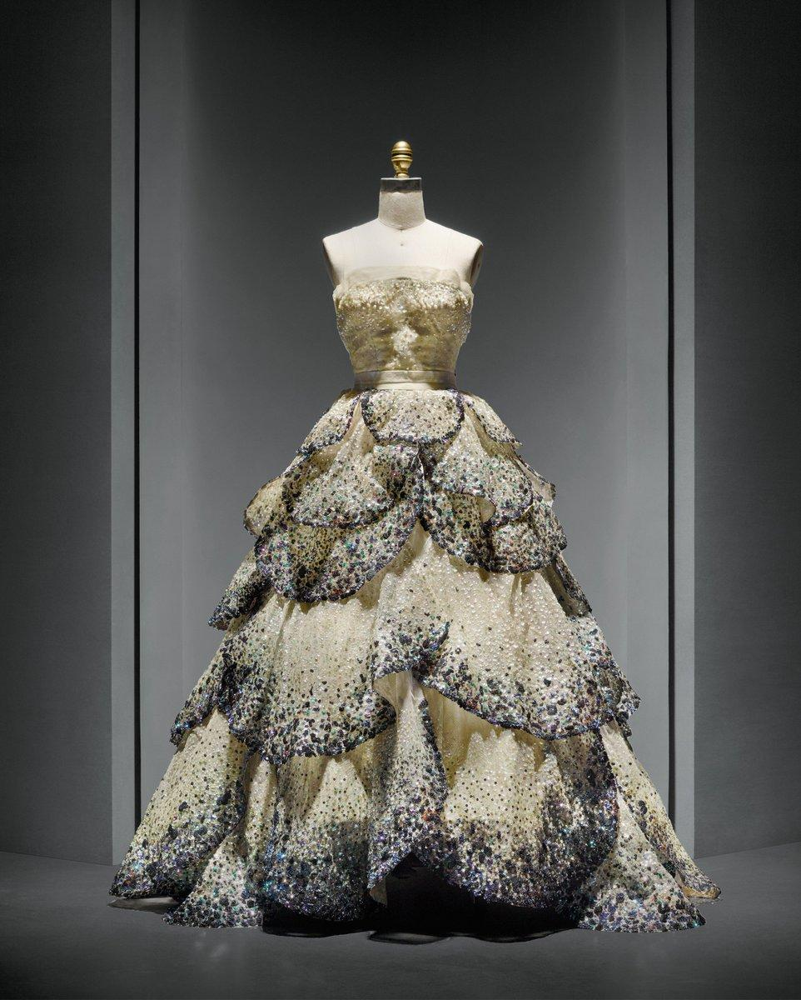

EDICIÓN ESPECIAL
THE ART OF
DIOR
La elegancia nunca pasa de moda.
BIENVENIDOS A
THE WORLD OF DIOR
Descubre el universo de Christian Dior, una de las casas de moda más importantes del mundo. Explora su historia, sus diseños más icónicos y el arte de la alta costura.
DESCUBRIR MÁS